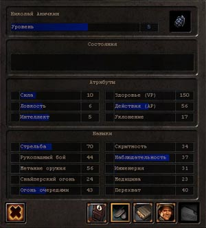
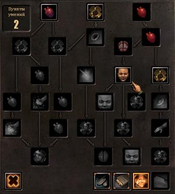
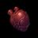
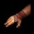

Панель с параметрами и описанием текущего персонажа выводится при нажатии кнопки «информация» с жетонами слева над игровой панелью. В зависимости от выбранного режима здесь могут выводиться атрибуты персонажа, его навыки, умения и статистика. Для переключения режима используется ряд кнопок в нижней части панели. Для открытия/закрытия панели с клавиатуры нажмите [ U ] .
Атрибуты и навыки

Эта панель выводится сразу после нажатия кнопки «информация». Она содержит информацию о текущих атрибутах и способностях вашего персонажа, менять какие-либо параметры здесь нельзя.
В верхней части находится окно с уровнем персонажа и иконка его военной профессии. В следующем окне «Состояния» отображаются иконки критических поражений, полученных персонажем.
Центральное окно отображает основные атрибуты персонажа (силу, ловкость, интеллект) и их производные — здоровье (VP), запас действий (AP) и уклонение.
Каждый параметр выводится в отдельном поле. Его левая часть занята названием и цветной полосой, которая отображает процесс роста параметра, а справа выводится текущее значение параметра. Рост любого параметра происходит постепенно за счёт роста опыта и навыков, но на характеристики персонажа влияет только целая часть параметра, которая и отображена справа. Цветная полоса показывает процесс роста параметра в пределах единицы: как только поле будет заполнено целиком, текущее значение параметра увеличится на 1. Исключение составляет верхнее поле уровня, в котором показан рост опыта, необходимого для перехода на следующий уровень, — любое изменение опыта непосредственно влияет на остальные параметры персонажа.
Слева от параметров находится квадратное поле, в котором могут выводиться стрелки, — синяя, направленная вверх (увеличение), или красная, направленная вниз (уменьшение). Стрелки показывают изменение параметра, которое произошло с момента предыдущего входа в этот экран. Аналогичным цветом могут выделяться значения параметров: синий цвет показывает, что параметр увеличился, красный — уменьшился. Обратите внимание, что цифры отображают максимальные значение атрибутов AP и VP персонажа, а не их текущие значения (текущие значения выводятся на игровой панели).
Параметры, описывающие отдельные навыки персонажа, перечислены в нижнем окне на этой панели. Подсказку с описанием любого параметра можно прочитать при наведении курсора на соответствующую строку. Более подробно о параметрах персонажа смотрите в разделе «Ролевая и боевая системы».
В нижней части панели расположены кнопки:
- Закрыть — закрывает панель;
- Атрибуты — выводит окно атрибутов и навыков;
- Статистика — выводит окно с подробной статистикой персонажа;
- Умения — выводит окно с деревом умений;
Умения

Панель с деревом умений отображает путь развития персонажа в своей специальности. На нём наглядно видны последовательность и взаимосвязь умений, которые необходимо приобрести персонажу, чтобы достичь высшего мастерства. Текущее количество умений, которыми владеет персонаж, зависит от его уровня. При переходе на следующий уровень персонажу становится доступно одно умение, какое именно выбрать — зависит от вас.
Когда уровень персонажа увеличивается и становится доступным выбор очередного умения, на боевом экране слева над игровой панелью начинает мерцать иконка «информация», а на панели параметров — кнопка «умения».
В левом верхнем углу панели находится окно с числом свободных пунктов, т.е. числом новых умений, которые может получить персонаж; в левом нижнем углу — кнопка «закрыть».
Остальную часть панели занимает дерево умений. Для каждой военной профессии набор умений и вид дерева индивидуальны. Одинаковые иконки отображают группу сходных умений, например, иконка с сердцем отображает группу умений, связанных с расходом AP, иконка с забинтованной рукой — медицинские умения, иконка в виде лица — умения, относящиеся к области восприятия. При наведении курсора на иконку можно прочитать название умения и его описание, что поможет вам решить, какое из доступных умений предпочесть. Выбранные умения отображены цветными иконками, не выбранные — тусклыми серыми. Умения, доступные для выбора в текущий момент, отмечены рамкой и представляют собой кнопки. Чтобы выбрать умение, нужно нажать на его кнопку. Обратите внимание, что персонаж приобретает любое умение один раз; отменить умение и вернуть свободные пункты нельзя.
Группы умений
Группы умений, относящихся к одной области, обозначаются сходными иконками. Иконки разного уровня в пределах группы немного отличаются по виду и размерам: более крупная иконка соответствует более развитым умениям.
|  | Умения, связанные с действиями персонажа ( AP ) |
Умения, связанные с ростом опыта и навыков |
|
Умения, связанные со способностью наносить критические повреждения |
 | Умения, относящиеся к лечению |
|
Умения, относящиеся к величине урона, наносимого противнику |
Умения, относящиеся к области восприятия |
||
Умения, связанные с защитой |
Умения, связанные с вероятностью попадания |
||
Умения, связанные с инженерными способностями |
|
Развитие персонажа отображается на дереве сверху вниз. В начале карьеры персонажа вам доступны умения, находящиеся в верхней части дерева. Умения в нижней части относятся к высшей ступени мастерства, чтобы дойти до них, персонажу необходимо последовательно развиваться. Стрелки на дереве показывают связь умений: чтобы приобрести какое-либо умение, необходимо иметь все предыдущие умения, которые указывают стрелками на него. В свою очередь, новое умение может открыть путь к освоению одного или нескольких следующих.
Совет: чтобы получить специалиста высокого класса, познакомьтесь с описанием всех умений, выберите цель, к которой должен стремиться персонаж (например, стать мастером-инженером или мастером-медиком), и двигайтесь по дереву в этом направлении.
Статистика

В этом режиме на экран выводятся статистические данные о результатах действий персонажа.
Статистика позволяет оценить различные параметры деятельности персонажа в боевой обстановке. Список параметров включает практически все возможные действия с оружием, специальными предметами, боевые параметры персонажа, количество убитых противников и нанесённый им урон, наиболее часто используемое оружие и режим стрельбы, наконец, те поражения, которые противник смог нанести персонажу.
Линейка прокрутки в правой части панели используется для перемещения по тексту или списку. Кнопки в нижней части позволяют закрыть панель или переключить её в другой доступный режим.